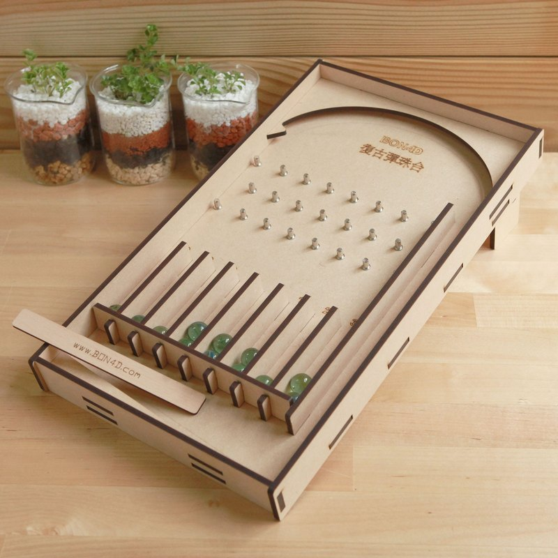

需求
类似台湾夜市弹珠台或者柏青哥

- 蓄力，拉杆，将弹珠弹出
- 经过碰撞落入下方槽中
分析
首先，有两点看似矛盾的需求：
- 需要真实的物理表现，结果遵循物理规律
- 类似一般转盘抽奖，结果需要服务器控制
通常我们知道游戏中的转盘，开箱，翻牌，老虎机的结果都是受控制的，抽奖过程是客户端的伪过程。因为我们能轻易想出它是怎么做到的，或者说怎么欺骗我们的。 而对于弹珠台呢？这是符合物理规律的东西，它的结果不是弹射的力度，弹珠台的布局，以及重力，弹性系数，摩擦系数等共同决定的吗？你怎么能控制所有的随机性提前预知结果呢？
如何既符合物理规律，又服从我们的意志呢？
这就是上面说的矛盾点。听起来不能实现。但如果实现了，它的体验一定是很有欺骗性的！这种想法支持我进一步思考下去。
物理规律：过程得出结果
服从意志：结果决定过程
跳出这个圈子的方法是提前准备好过程。
先记录若干条符合物理规律的表现，再根据力度和抽奖结果从记录中筛选合适的结果。
如果记录库足够丰富，玩家是很难发现游戏过程的表现是提前预设好的。
这样，我们就把不可能变成了可能。
其次，有一些开发现状：
- 现有客户端没有物理引擎
- 客户端开发时间约20人日
可以排除的解决方案：
-
由美术制作整个游戏过程的动画
这个方案稍微思考几秒钟就可以pass了：
- 工作量巨大
- 弹珠台布局即使微调也会导致动画重做
- 制作出符合物理规律的动画的难度
- 表现效果
感觉后面还有100条
-
集成物理引擎
- 工作量较大
- 增加包体积
- 实际游戏时不会使用
最终方案：
使用其他工具记录过程，在客户端中还原。
考虑到开发效率，选用Unity。
实际开发遇到的问题
精度：
美术输出的弹珠模型尺寸与Unity的Project Settings -> PhysicsManager -> Default Contact Offset非常接近，即模型尺寸与误差范围过于接近。这就导致表现效果很不好，还没接触到就弹开了，精度改得过小又会有物体已经彼此重叠才发生碰撞的现象。最终解决办法倒也简单，将所有模型放大N倍（统一拖到一个新的父节点统一放大即可），输出路线时再缩小N倍，误差就被吃掉了。